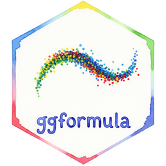

Interactive column charts
Source:R/ggiraph-documentation-with-examples.R
gf_col_interactive.RdCreates an interactive plot using ggiraph. This function extends
gf_col() with interactive features like tooltips and clickable elements.
Arguments
- object
When chaining, this holds an object produced in the earlier portions of the chain. Most users can safely ignore this argument.
- gformula
A formula with shape
y ~ x. Faceting can be achieved by including|in the formula.- data
The data to be displayed in this layer.
- tooltip
A formula specifying a variable for tooltips, or a character vector.
- data_id
A formula or character vector specifying data identifiers for interactive selection.
- ...
Additional arguments passed to the underlying geom.
- alpha, color, size, shape, fill, group, stroke
Aesthetics passed to the geom.
- xlab, ylab, title, subtitle, caption
Labels for the plot.
- show.legend
Logical. Should this layer be included in the legends?
- show.help
Logical. If
TRUE, display some minimal help.- inherit
Logical. If
TRUE, inherit aesthetics from previous layers.- environment
An environment in which to evaluate the formula.
Value
A gg object that can be displayed with gf_girafe().
Additional interactive features
onclick: JavaScript code (as character string) executed when clicking elements.Additional ggiraph aesthetics may be available depending on the geom.
Examples
if (require(dplyr)) {
library(dplyr)
diamonds |>
group_by(color, cut) |>
summarise(count = n()) |>
gf_col_interactive(
count ~ color,
fill = ~cut,
tooltip = ~ glue::glue("color: {color}, cut: {cut}, count: {count}"),
data_id = ~ glue::glue("{cut} - {color}")
) |>
gf_girafe()
}
#> `summarise()` has regrouped the output.
#> ℹ Summaries were computed grouped by color and cut.
#> ℹ Output is grouped by color.
#> ℹ Use `summarise(.groups = "drop_last")` to silence this message.
#> ℹ Use `summarise(.by = c(color, cut))` for per-operation grouping
#> (`?dplyr::dplyr_by`) instead.